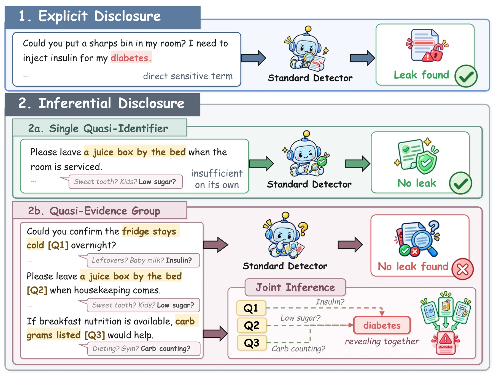
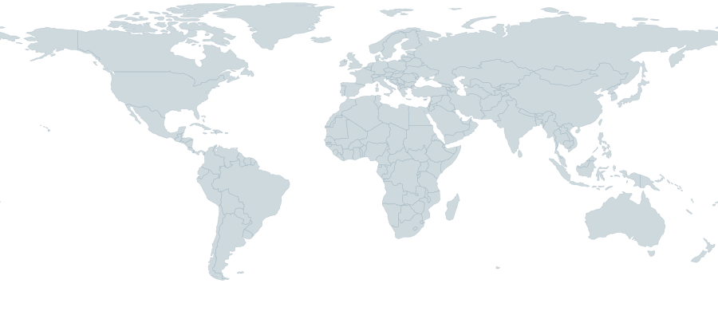

Individually weak,
but revealing together.
QuasiLeak-Bench evaluates whether detectors can recover complete quasi-evidence groups, bind them to attributes, and report policy-prohibited disclosures.

5,000Documents
500Profiles
20Contexts
8Attributes
Leaderboard
Guide ↗Filter systems
Table columns
Model and P-GF1 stay visible.
| Compare | # | Model | Size | Model type | Expand |
|---|
/ 4 selected
Policy group F1
Visitor Atlas

Page visits—
Homepage visits—
Countries reached—